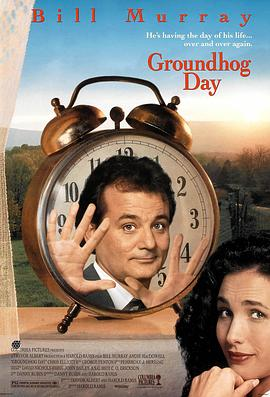
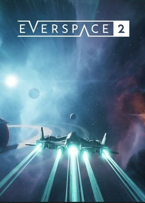
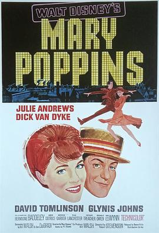

2023-07-30 13:43:22
豆瓣原页
看过 无名之辈 ★★★★☆
没有太多喜剧成分，甚至感觉越看越不觉得好笑，只是说了一个有一些甜美但是很沉重的故事。
2023-07-28 21:42:48
豆瓣原页
看过 秘密入侵 / Secret Invasion ★★★☆☆
第一集还挺有趣，后面越来越像西部世界，而且让人犯困+摸不着头脑的对话和剧情发展。
2023-07-23 21:27:18
豆瓣原页
想看 摄影机不要停！ / カメラを止めるな！
2023-07-23 21:26:47
豆瓣原页
想看 遇人不熟 / 運命じゃない人
2023-07-23 21:13:28
豆瓣原页
看过 盗钥匙的方法 / 鍵泥棒のメソッド ★★★★★
宝藏电影啊，真的是爆笑了，剧情张驰有度，有笑点有泪点，收尾是我喜欢的大团圆结局。只可惜最近广末良子的新闻让我有点诧异。看到手上的《How do you live?》还没读多少，该身体健康+努力向上。
2023-07-23 13:48:32
豆瓣原页
想看 芭比 / Barbie
2023-07-22 06:44:53
豆瓣原页
想看 无主之地 / Borderlands
2023-07-20 10:58:32
豆瓣原页
在读 How Do You Live?
总算添加上来了，这个版本是澳洲出版的，图书馆馆藏都是这本
2023-07-15 20:04:06
豆瓣原页
看过 泡沫之夏 ★★★☆☆
整体剧情一般，但编剧值得一叠刀片。不够揪心，反而很让人闹心🫠 本可以大团圆甜美结局，非要搞个这么个结局，很无语。
2023-07-15 08:14:26
豆瓣原页
想看 娜娜 / NANA -ナナ-
马克一下
2023-07-14 16:45:26
豆瓣原页
想看 蒙上你的眼：逃出巴塞罗那 / A ciegas
2023-07-14 15:26:16
豆瓣原页
想读 你想活出怎样的人生
土澳没有中文版，等资源ing 🥲
2023-07-14 15:25:14
豆瓣原页
想读 君たちはどう生きるか
澳洲还没有上映日期，还是先读读小说吧。太吊胃口了
2023-07-14 06:55:34
豆瓣原页
想玩 东方新世界 東方シンセカイ
2023-07-08 11:32:37
豆瓣原页
想玩 超侦探事件簿 雾雨谜宫 超探偵事件簿レインコード
听说一周霸榜
2023-07-07 20:25:26
豆瓣原页
看过 地球改变之年 / The Year Earth Changed ★★★★★
真美啊，人类果然是阻碍地球运转的绊脚石🙈
2023-07-07 19:40:16
豆瓣原页
看过 驴得水 ★★★★☆
荒诞的剧情，现在想想能过审核真的是奇迹。。。片尾小女孩投奔延安（新中国）去了；疫情3年，现在小女孩去哪儿了呢。
2023-07-06 20:45:38
豆瓣原页
在看 秘密入侵 / Secret Invasion
2023-07-02 06:08:24
豆瓣原页
想看 进击的巨人 最终季 完结篇 前篇 / 進撃の巨人 The Final Season 完結編（前編）
啥啊，咋最终季这么长。。。。。。。。。。
2023-06-29 20:20:50
豆瓣原页
想看 消失的她
2023-06-27 17:56:41
豆瓣原页
想玩 异形：坠入黑暗 Aliens: Dark Descent
2023-06-26 20:22:53
豆瓣原页
想看 别叫我“赌神” / 別叫我「賭神」
矮油 “对了 我会遇到周润发 所以你可以跟同学炫耀赌神未来是你爸爸”
2023-06-24 18:42:44
豆瓣原页
看过 闪电侠 / The Flash ★★★★☆
周二半价看的，感觉前后都挺带劲，中间有点瞌睡，没有期望太高，总体来说还挺有意思
2023-06-20 22:40:09
豆瓣原页
想看 鬼灭之刃：柱训练篇 / 鬼滅の刃 柱稽古編
豆瓣更新很快啊，早上媒体才放的消息，晚上就有条目了（上午看了确实没有）。又是有生之年了
2023-06-19 20:03:55
豆瓣原页
在看 泡沫之夏
不得已又要看摸不着头脑的剧情了
2023-06-19 20:02:02
豆瓣原页
看过 鬼灭之刃：锻刀村篇 / 鬼滅の刃 刀鍛冶の里編 ★★★★★
每周一追得我好辛苦，精彩，太精彩了！下一季又不知道要猴年马月了。 //熬到了嗷 //唔，要等一年的嘛，是不是很多人活不到那一天
2023-06-19 19:57:03
豆瓣原页
看过 黑镜 第六季 / Black Mirror Season 6 ★★★☆☆
期待值不高，果然狼人杀那集看得无厘头，最精彩的也就宇航员那一集了。其他集感觉都没有吊到我的胃口。
2023-06-16 17:11:04
豆瓣原页
看过 超级马力欧兄弟大电影 / The Super Mario Bros. Movie ★★★★☆
都是彩蛋，没啥内容，比较看个乐呵向
2023-06-16 06:50:31
豆瓣原页
在看 黑镜 第六季 / Black Mirror Season 6
期待值不高，第一集只能说中规中矩的发挥，毕竟ai、量子计算已经是最近半年的热点了
2023-06-16 06:46:03
豆瓣原页
看过 一出好戏 ★★★☆☆
在戏剧大会上知道这个片子的，黄渤说当时想名字想了很久。实际看完之后依然觉得云里雾里的，前面很多感觉上是要用到的信息量、甚至伏笔，最后都没有用上。这部作为商业片还是有点赶的成分在里面。
2023-06-14 07:06:11
豆瓣原页
看过 心花路放 ★★★★☆
前面还是挺平淡的，就徐峥一个劲儿在那撩妹，后面开始精彩了，原来是一正一倒的叙事方式，然后用小狗贯穿时间线。妙啊！
2023-06-11 16:48:42
豆瓣原页
想看 封神第一部：朝歌风云
2023-06-10 09:29:26
豆瓣原页
看过 死神来了2 / Final Destination 2 ★★★☆☆
选角选的不错，剧情确实是非常之离谱。（同年阴影补完计划
2023-06-10 08:12:33
豆瓣原页
看过 一年一度喜剧大赛 第二季 ★★★★☆
非常精彩的一季，赛制升级，让淘汰的演员也能放光。决赛圈导演强制发offer太绝了。期待下一季！
2023-06-10 07:59:25
豆瓣原页
想看 心花路放
2023-06-10 07:58:42
豆瓣原页
想看 透明侠侣
2023-06-07 06:52:29
豆瓣原页
想看 催眠 / Hypnotic
2023-06-07 06:09:53
豆瓣原页
想看 消失的情人节 / 1秒先の彼
2023-06-04 09:10:33
豆瓣原页
想看 大陆酒店 / The Continental
2023-06-04 09:10:08
豆瓣原页
想看 疾速追杀：芭蕾杀姬 / Ballerina
2023-05-30 19:58:47
豆瓣原页
看过 疾速追杀4 / John Wick: Chapter 4 ★★★★★
竟然是终章，前面的打斗很精彩，最后台阶战有点疲劳，末尾左轮对决扳回一城，结局是挺秃然的。总体来说是个圆满的大团圆结局，John Wick的爱犬也得到了呼应。
2023-05-30 06:08:39
豆瓣原页
想看 不良执念清除师 / 不良執念清除師
2023-05-28 07:08:07
豆瓣原页
想看 杀死比尔 / Kill Bill: Vol. 1
2023-05-22 10:44:30
豆瓣原页

想看 土拨鼠之日 / Groundhog Day
2023-05-21 18:12:33
豆瓣原页
想看 大话西游之大圣娶亲 / 西遊記大結局之仙履奇緣
2023-05-21 18:12:18
豆瓣原页
想看 大话西游之月光宝盒 / 西遊記第壹佰零壹回之月光寶盒
看喜剧大会2看到致敬大话西游的片段，想起来还没完整看过
2023-05-20 14:40:43
豆瓣原页
看过 重启人生 / ブラッシュアップライフ ★★★★★
哎呀，这剧真是好有趣啊，这个点儿真的是能无限发散，还能用这个点儿给自己人生失败找借口 😂 真是回味无穷，音乐也是相当不错
2023-05-19 19:45:21
豆瓣原页
在看 重启人生 / ブラッシュアップライフ
第一集就开始有趣了 不错不错
2023-05-15 12:01:06
豆瓣原页
转发 神出鬼没 Ghosted (2023)
R.i.p 🙏🙏🙏
2023-05-13 22:23:17
豆瓣原页
看过 侧耳倾听 / 耳をすませば ★★★★☆
选角还是不错的，宫崎老粉表示满意，男主大提琴拉得有模有样，没少下功夫。剧情节奏还是有点忽慢呼快的感觉，中间第三者的情结没处理好，以至于还是有点尬。给4星主要是动画光环，看了一万遍的动画 🥲 one of the best
2023-05-13 17:21:10
豆瓣原页
在玩 塞尔达传说 王国之泪 ゼルダの伝説 ティアーズ オブ ザ キングダム
上一代还没玩完，先玩这一代吧😂
2023-05-10 17:51:21
豆瓣原页
想看 波鲁迪斯V 遗产 / Voltes V: Legacy
2023-05-05 20:46:13
豆瓣原页
想看 星期三 第二季 / Wednesday Season 2
boxing day上映啊
2023-05-05 20:43:01
豆瓣原页
看过 满江红 ★★★★☆
镜头和堆人都是张艺谋的特色，每次尿点都是用敲锣打鼓逼回去的，这次堆反转也是很足了，虽然没有经典的反转剧过瘾，但是也不来了。另外，看到《一年一度戏剧大赛 S01》的张驰了，还挺不错。
2023-05-03 22:33:57
豆瓣原页
看过 路德灵异侦探社 / Lockwood & Co. ★★★★★
设定很有意思，有点《黄金罗盘》即视感，孩子可以看到鬼魂但大人不行。期待下一季
2023-04-30 07:28:00
豆瓣原页
想看 黑镜 第六季 / Black Mirror Season 6
并没有很期待，但是还是看一下
2023-04-28 20:29:19
豆瓣原页
想看 恩娇 / 은교
缪斯 hmmm
2023-04-26 22:11:48
豆瓣原页
在看 一年一度喜剧大赛 第二季 ★★★★☆
这一季太卷了吧，一个个都是直接晋级，史策咋没来呢 =，=
2023-04-26 22:04:41
豆瓣原页
看过 因为太怕痛就全点防御力了Ⅱ / 痛いのは嫌なので防御力に極振りしたいと思います。Ⅱ ★★★☆☆
没有第一季的新鲜感了 =, = 有点单调，还是说我口味变挑了
2023-04-26 21:23:52
豆瓣原页
看过 间谍教室 / スパイ教室 ★★★☆☆
设定有点意思，有点暗杀教室的感觉，可惜后面主线剧情不是很精彩
2023-04-25 19:37:06
豆瓣原页
想看 了不起的夜晚
蒋龙 蒋易 拍电影啦
2023-04-24 16:30:46
豆瓣原页
看过 曼达洛人 第三季 / The Mandalorian Season 3 ★★★★★
精彩，几个支线剧情也是很精彩，虽然星战没看完，但是不影响它好看
2023-04-22 11:31:16
豆瓣原页
想玩 新无主之地传说 New Tales from the Borderlands
2023-04-22 11:27:59
豆瓣原页
想玩 高级战争1+2 营地重启 Advance Wars 1+2: Re-Boot Camp
2023-04-22 09:50:26
豆瓣原页
看过 欧比旺 / Obi-Wan Kenobi ★★★★☆
星球大战宇宙真香系列，目前还是曼达洛人最香。因为正传没看完，导致不知道俩娃身份😅 又得去补了。总体来说还是很精彩的。
2023-04-20 23:17:21
豆瓣原页
看过 蚁人与黄蜂女：量子狂潮 / Ant-Man and the Wasp: Quantumania ★★★★☆
整部电影场景都是CG做出来的，还不错，微观宇宙有模有样了，阿凡达部落可以存在于微观世界中了
2023-04-18 22:37:36
豆瓣原页
看过 一年一度喜剧大赛 ★★★★★
一周一个作品，连续12周，tql 很多精彩的组合，没拿奖的三国有点可惜，准备看第二季
2023-04-16 15:26:21
豆瓣原页
在看 欧比旺 / Obi-Wan Kenobi
星球大战宇宙真香系列，目前还是曼达洛人最香
2023-04-15 22:19:58
豆瓣原页
看过 浪漫速成班 / 일타스캔들 ★★★☆☆
Netflix上看的，设定比较有趣，和国内也挺像，就是这个cp感有点不足，很明显觉得女主和男主不是同龄人🫠
2023-04-14 18:57:54
豆瓣原页
看过 异世界归来的舅舅 / 異世界おじさん ★★★☆☆
终于13集完结了，等了得有一年吧我的天。。。开始设定很有趣，越看越没内容的感觉，现实线的cp还有没有了啊
2023-04-13 21:07:23
豆瓣原页
在看 鬼灭之刃：锻刀村篇 / 鬼滅の刃 刀鍛冶の里編
熬到了嗷 //唔，要等一年的嘛，是不是很多人活不到那一天
2023-04-13 21:01:16
豆瓣原页
看过 铃芽之旅 / すずめの戸締まり ★★★★☆
土澳终于上了，果断刷首发。这一部中规中矩，画面依然很棒，但是有很多既视感，有前几部的风景，还有《cross road》的海边海鸥。上一部是超现实的大雨自然灾害，这一部是基于真实事件的地震灾害。诚哥写大团圆结局越来越熟练了。
2023-04-09 21:37:48
豆瓣原页

玩过 永恒空间2 EVERSPACE 2 ★★★★☆
手残demo卡关了，总体来说做的还是不错的，就是操作性略强，包括捡东西和打怪都比较考验瞄准
2023-04-09 09:55:48
豆瓣原页
看过 黑亚当 / Black Adam ★★★☆☆
DC的超级英雄怎么就要么黑要么金，非常的重复感。剧情也是挺无厘头，看完我还是不知道黑亚当跟他儿子到底谁和巫师派有关系。
2023-04-08 23:21:32
豆瓣原页
在玩 永恒空间2 EVERSPACE 2 ★★★★☆
玩了下demo，不是roguelike的就还行，手柄操作真的是各种bug啊，还是得切回键鼠
2023-04-08 10:16:52
豆瓣原页
想看 一出好戏
2023-04-08 06:43:54
豆瓣原页
想玩 永恒空间2 EVERSPACE 2
2023-04-07 21:00:55
豆瓣原页
在看 浪漫速成班 / 일타스캔들 ★★★☆☆
2023-04-07 16:32:45
豆瓣原页

看过 欢乐满人间 / Mary Poppins ★★★★☆
人尽皆知的mary poppins，没想到竟然是1964的电影，没有很大的惊喜，但是可想而知在当时是很惊艳的
2023-04-07 11:01:29
豆瓣原页
想看 忘不了餐厅 第一季
2023-04-06 20:02:16
豆瓣原页
看过 死神来了 / Final Destination ★★★★☆
记得很小的时候看过一丢丢，现在想起来补一下了。在当时还是比较惊艳的，在今天看来十分平常 ;-)
2023-04-05 18:20:32
豆瓣原页
想看 死神来了：血脉诅咒 / Final Destination: Bloodlines
竟然会有6？
2023-04-03 21:14:34
豆瓣原页
想看 彼得·潘与温蒂 / Peter Pan & Wendy
2023-04-03 19:45:15
豆瓣原页
看过 梅根 / M3GAN ★★★☆☆
看广告吹得玄乎，其实一点都不恐怖。。。
2023-04-01 16:40:10
豆瓣原页
看过 疾速追杀3 / John Wick: Chapter 3 - Parabellum ★★★★☆
好家伙，这是又被winston背叛了么，这一季碟中碟中谍
2023-04-01 12:51:50
豆瓣原页
看过 疾速追杀2 / John Wick: Chapter 2 ★★★★★
第四部上映了，抓紧补一下。好家伙全城通缉了